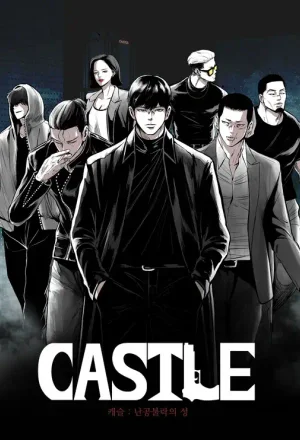

Castle
Género: Acción, Crimen
Kim Shin, conocido en los bajos fondos como "Amur", regresa a Corea con una sola meta: destruir a "Castle", el despiadado sindicato criminal que controla todo el país y que asesinó a su mentor. Para lograr su venganza, reclutará a los asesinos y mafiosos más peligrosos del continente para desatar una guerra brutal desde las sombras
⭐⭐⭐⭐